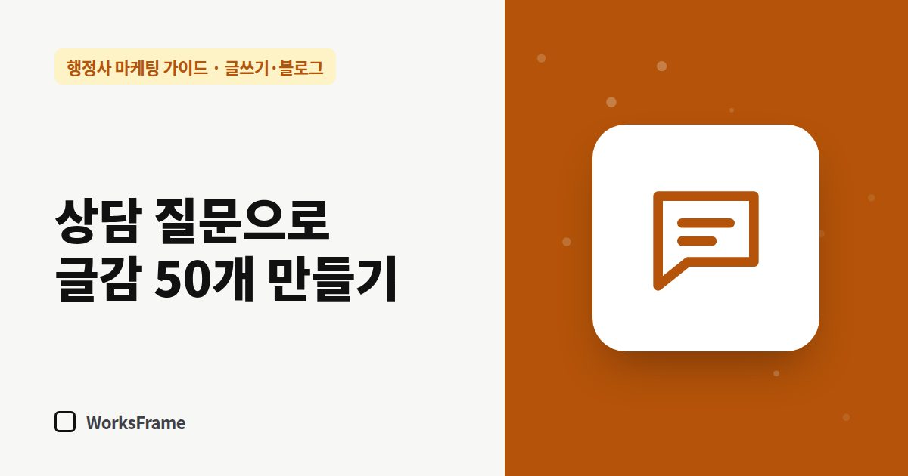

글쓰기·블로그
상담에서 받은 질문으로 행정사 글감 50개 만들기
한 줄 답
상담이 끝날 때마다 고객이 처음 한 말을 그대로 한 줄 적어 두세요. 그 기록이 곧 글감 목록이 됩니다. 업무 하나에 질문 10개면 금방 50개입니다.

고객이 상담에서 처음 꺼내는 말은 검색창에 넣는 말과 거의 같습니다. 그래서 상담 기록이 곧 글감 목록입니다.
기록하는 법
상담이 끝나면 한 줄만 적으세요.
| 날짜 | 업무 | 고객이 한 말(그대로) | 대상 | 글로 쓸 만한가 |
|---|---|---|---|---|
| 9/3 | 체류 | “비자 만료 한 달 남았는데 지금 해도 돼요?” | 외국인 본인 | ○ |
| 9/5 | 공장 | “임대 공장도 등록돼요?” | 제조 대표 | ○ |
고객이 한 말 그대로 적는 게 핵심입니다. 사무소식 용어로 바꾸면 검색어와 멀어집니다.
질문 하나를 글감 여러 개로
질문 하나에서 여러 글이 나옵니다.
- 원 질문: “비자 만료 한 달 남았는데 지금 해도 돼요?”
- 체류기간 연장, 언제부터 신청할 수 있나
- 만료일이 지나면 어떻게 되나
- 연장 준비서류 체크리스트
- 연장이 거절됐을 때 먼저 할 일
업무 하나당 10개씩
주력 업무 하나를 두고 아래 질문을 던지면 금방 10개가 나옵니다.
- 누가 해당되나?
- 언제 해야 하나?
- 무엇을 준비하나?
- 얼마나 걸리나?
- 비용은?
- 혼자 할 수 있나, 맡겨야 하나?
- 거절·보완되면?
- 자주 하는 실수는?
- 최근 바뀐 것은?
- 비슷한 다른 업무와 차이는?
주력 업무 3개 × 10개 = 30개. 여기에 상담 기록에서 나온 것을 더하면 50개는 금방입니다.
무엇부터 쓸까
- 자주 들은 질문부터
- 급한 고객이 찾는 주제(기한, 거절, 보완)
- 단가가 높은 업무와 연결된 주제
자주 묻는 질문
고객 질문을 글에 쓰면 개인정보 문제는 없나요?
질문의 “유형”만 쓰고, 이름·국적·회사명처럼 사람을 알아볼 수 있는 정보는 빼세요. 사례를 자세히 쓰려면 동의를 받는 것이 안전합니다. (사례 글 쓰는 법)
기록할 시간이 없는데요.
통화 직후 휴대폰 메모에 한 줄이면 됩니다. 일주일에 한 번 표로 옮기세요.